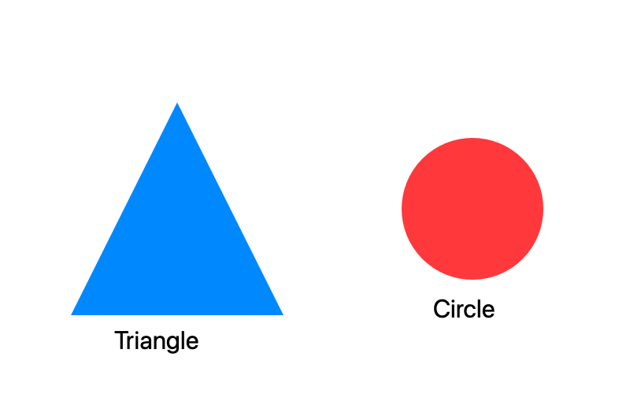

01
見る。
YouTubeや手元の動画を教材に。前回の再生位置から、そのまま続けられます。
前回の続きから再開 ↗見る、残す、
覚える、戻る。

ここ、重要。12:43 画像も、書き込みも、動画の時刻と一緒に。
ひとつの画面で、学びをつなぐ。操作できる画面イメージです。実際の動画は再生しません。
講義を見終えた、その先へ。
その場の気づきを、
次の理解につなげる4つの動作。
YouTubeや手元の動画を教材に。前回の再生位置から、そのまま続けられます。
前回の続きから再開 ↗重要な画面をスクショし、気づきをメモ。「分からない」も時刻付きで残せます。
スクショに直接書き込み ↗メモや画像から復習カードを作成。思い出せたかに合わせて、次の復習日が変わります。
今日の復習がひと目で分かる ↗忘れた内容は元動画の説明へ。ノートも画像もカードも、同じ時刻につながっています。
もう一度、元の説明へ ↗いつものYouTubeページから動画を選択。公開プレイリストは、投稿者と講座にまとめて取り込めます。
元の講義順で進めて、次の動画へ。講座全体の進捗と残り時間も確認できます。
時刻付きノート、スクリーンショット、ペンや蛍光ペン。書き込んだ重要な範囲は、画像付きの復習カードにもできます。
この図の違いを、もう一度。
☆ 重要な気づき字幕、メモ、OCRで読んだ画像内の文字まで横断検索。画像AIの説明を使えば、曖昧な言葉でも探せます。
画像・OCR 図形の基礎 12:43 ↗
ノート 三角形と円の違い 18:05 ↗
文字起こし、章分け、要点整理、画像の読み取り。
学習を支える作業を、PC内のAIが手伝います。
カードの候補は、内容を確認・修正してから保存。
自分で理解する時間を、大切にするためのAIです。
モデルの初回取得にはネット接続が必要です。YouTubeの利用にもネット接続が必要です。
選んだ重要範囲を画像カードに。
復習と元動画が、つながったまま。
実装済みのMacアプリ画面 / サンプル教材を使用
無料版＋買い切りProを予定しています。
現在は全機能を使える開発版です。
正式名称・販売価格・公開配布の開始時期は準備中です。販売用の署名・公証と決済連携は今後の対応となります。
使い始める前に、
知っておきたいこと。
AIの実行環境はアプリに同梱しています。アプリ内の「AIの準備」からモデルを選び、ボタンを押して初回のダウンロードを行います。OllamaやPythonの手動インストール、ターミナルでの操作は不要です。
動画や音声ファイルはダウンロードしません。YouTubeの実際のページで教材を選び、公式の埋め込みプレイヤーで再生します。公開プレイリストの情報や取得可能な公開字幕を取り込みます。非公開・年齢制限・埋め込み禁止の動画などは利用できない場合があります。
モデル取得後は、手元の動画・ノート・画像・復習とローカルAIによる解析をオフラインで利用できます。YouTubeの視聴や公開字幕・プレイリストの取得にはインターネット接続が必要です。
AIはカードの候補を作ります。内容を確認・修正してから保存でき、保存せず破棄することもできます。AIの読み取りや回答に誤りがある場合は、元動画の説明と照らし合わせて確認してください。
学習記録はMarkdown、復習カードはAnki用TSVとして書き出せます。動画・画像・学習情報を含むZIPバックアップと、Macアプリの画面からの復元にも対応しています。AIモデルのキャッシュはバックアップに含みません。
現在のアプリの対応はApple Silicon搭載のMac、macOS 14以降です。Windows・Linux・スマートフォン向けアプリは提供していません。この紹介ページはスマートフォンからもご覧いただけます。